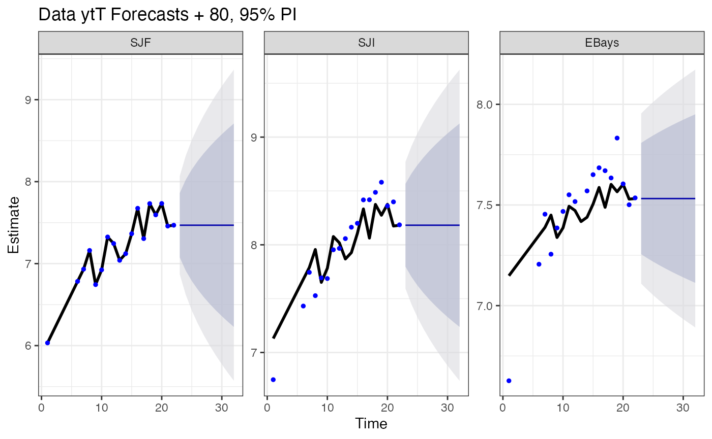

The {MARSS} package fits multivariate autoregressive state-space (MARSS) models and the {marssTMB} is a companion package that allows fast model fitting via TMB. MARSS models take the form: \[\begin{equation}\label{eqn:marss} \begin{gathered} \mbox{$\mathbf x$}_t = \mbox{$\mathbf B$}_t\mbox{$\mathbf x$}_{t-1} + \mbox{$\mathbf u$}_t + \mbox{$\mathbf C$}_t\mbox{$\mathbf c$}_t + \mbox{$\mathbf G$}_t\mbox{$\mathbf w$}_t, \text{ where } \mbox{$\mathbf w$}_t \sim \,\textrm{MVN}(0,\mbox{$\mathbf Q$}_t)\\ \mbox{$\mathbf y$}_t = \mbox{$\mathbf Z$}_t\mbox{$\mathbf x$}_t + \mbox{$\mathbf a$}_t + \mbox{$\mathbf D$}_t\mbox{$\mathbf d$}_t + \mbox{$\mathbf H$}_t\mbox{$\mathbf v$}_t, \text{ where } \mbox{$\mathbf v$}_t \sim \,\textrm{MVN}(0,\mbox{$\mathbf R$}_t)\\ \mbox{$\mathbf x$}_1 \sim \,\textrm{MVN}(\pmb{\pi},\pmb{\Lambda}) \text{ or } \mbox{$\mathbf x$}_0 \sim \,\textrm{MVN}(\pmb{\pi},\pmb{\Lambda}) \end{gathered} \end{equation}\] \(\mbox{$\mathbf c$}\) and \(\mbox{$\mathbf d$}\) are inputs (aka, exogenous variables or covariates or indicator variables) and must have no missing values. They are not treated as `data’ in the likelihood but as inputs.
Example: a mean-reverting random walk model with three observation time series: \[\begin{gather*} \begin{bmatrix}x_1\\ x_2\end{bmatrix}_t = \begin{bmatrix}b&0\\ 0&b\end{bmatrix} \begin{bmatrix}x_1\\ x_2\end{bmatrix}_{t-1} + \begin{bmatrix}w_1\\ w_2\end{bmatrix}_t, \quad \begin{bmatrix}w_1\\ w_2\end{bmatrix}_t \sim \,\textrm{MVN}\begin{pmatrix}\begin{bmatrix}0\\0\end{bmatrix},\begin{bmatrix}q_{11}&q_{12}\\ q_{12}&q_{22}\end{bmatrix} \end{pmatrix}, \\ \begin{bmatrix}x_1\\ x_2\end{bmatrix}_0 \sim \,\textrm{MVN}\begin{pmatrix}\begin{bmatrix}0\\ 0\end{bmatrix},\begin{bmatrix}1&0\\ 0&1\end{bmatrix} \end{pmatrix} \\ \\ \begin{bmatrix}y_1\\y_2\\y_3\end{bmatrix}_t = \begin{bmatrix}1&1\\ 0&1\\ 1&0\end{bmatrix} \begin{bmatrix}x_1\\x_2\end{bmatrix}_t + \begin{bmatrix}v_1\\ v_2\\ v_3\end{bmatrix}_t,\quad \begin{bmatrix}v_1\\ v_2\\ v_3\end{bmatrix}_t \sim MVN\begin{pmatrix}\begin{bmatrix}a_1\\ 0\\ 0\end{bmatrix}, \begin{bmatrix}r_{11}&0&0\\ 0&r&0\\ 0&0&r\end{bmatrix} \end{pmatrix} \end{gather*}\]
To fit a MARSS model with the {MARSS} package, we translate the mathematical model written in matrix form into equivalent matrices (or arrays if time-varying) in code. Matrices that combine fixed and estimated values are specified using a list matrix with numerical values for fixed values and character names for the estimated values.
The model above is written as
B1 <- matrix(list("b",0,0,"b"),2,2)
U1 <- matrix(0,2,1)
Q1 <- matrix(c("q11","q12","q12","q22"),2,2)
Z1 <- matrix(c(1,0,1,1,1,0),3,2)
A1 <- matrix(list("a1",0,0),3,1)
R1 <- matrix(list("r11",0,0,0,"r",0,0,0,"r"),3,3)
pi1 <- matrix(0,2,1); V1=diag(1,2)
model.list <- list(B=B1,U=U1,Q=Q1,Z=Z1,A=A1,R=R1,x0=pi1,V0=V1,tinitx=0)Notice the one-to-one correspondence between the model in and the
math version of the model. The matrix names in the model list must be B,
U, Q, Z, A, R, x0, V0. The tinitx element tells MARSS
whether the initial state for \(x\) is
at \(t=1\) (tinitx=1) or
\(t=0\) (tinitx=0). The
data must be entered as a \(n \times
T\) matrix, or a ts object or vector (which will be converted to
a \(n \times T\) matrix). MARSS has a
number of text shortcuts for common parameter forms, such as ``diagonal
and unequal’’; see the User Guide for the possible shortcuts. You can
leave off matrix names and the defaults will be used. See
[MARSS::MARSS.marxss()] for the defaults.
Harbor seal counts:
Fit but set B to identity.
library(marssTMB)
model.list$B <- diag(1,2)
fit <- MARSS(dat, model=model.list, method="TMB")
#>
#> MARSS fit is
#> Estimation method: TMB
#> WARNING: nlminb() ran for 44 iterations and stopped before maxit with a convergence warning.
#> Treat the parameter values and logLik with caution. Message: false convergence (8) .
#> Log-likelihood: -48.02177
#> AIC: 108.0435 AICc: 109.8696
#>
#> Estimate
#> A.a1 -8.25e+00
#> R.r11 5.70e-16
#> R.r 3.87e-02
#> Q.q11 6.69e-03
#> Q.q12 1.83e-02
#> Q.q22 5.03e-02
#> Initial states (x0) defined at t=0
#>
#> Standard errors have not been calculated.
#> Use MARSSparamCIs to compute CIs and bias estimates.The \(\mbox{$\mathbf R$}\), \(\mbox{$\mathbf Q$}\) and \(\pmb{\Lambda}\) variances can be set to zero to specify partially deterministic systems. This allows you to write MAR(p) models in MARSS form for example. See the User Guide for examples.
The main function is which returns a vector of only the estimated parameters.
coef(fit, type="vector")
#> A.a1 R.r11 R.r Q.q11 Q.q12
#> -8.245225e+00 5.697216e-16 3.871945e-02 6.690515e-03 1.834986e-02
#> Q.q22
#> 5.033270e-02You can include type="matrix" to the full parameter
matrices.
You can get a pretty version of the estimates with SEs and CIs with
tidy(fit)
#> term estimate std.error conf.low conf.up
#> 1 A.a1 -8.245225e+00 0.066518475 -8.375598849 -8.11485122
#> 2 R.r11 5.697216e-16 0.009033554 -0.017705440 0.01770544
#> 3 R.r 3.871945e-02 0.010586408 0.017970475 0.05946843
#> 4 Q.q11 6.690515e-03 0.005131866 -0.003367758 0.01674879
#> 5 Q.q12 1.834986e-02 0.007851066 0.002962055 0.03373767
#> 6 Q.q22 5.033270e-02 0.022126012 0.006966516 0.09369889To get the estimated states (the expected value), use
tsSmooth(fit) |> head()
#> .rownames t .estimate .se
#> 1 X1 1 7.148425 0.03327370
#> 2 X1 2 7.188515 0.08036751
#> 3 X1 3 7.228605 0.09557549
#> 4 X1 4 7.268696 0.09557381
#> 5 X1 5 7.308786 0.08036150
#> 6 X1 6 7.348877 0.03324949If you want a matrix of the states, you can use
fit$states.
Use ggplot2::autoplot() for a print out of various
standard diagnostic plots.
Use [MARSS::residuals()] for the residuals.
residuals(fit) |> head()
#> type .rownames name t value .fitted .resids .sigma .std.resids
#> 1 ytt1 SJF model 1 6.033086 -8.245225 14.278311 1.4469703 9.867730
#> 2 ytt1 SJF model 2 NA 6.033086 NA NA NA
#> 3 ytt1 SJF model 3 NA 6.033086 NA NA NA
#> 4 ytt1 SJF model 4 NA 6.033086 NA NA NA
#> 5 ytt1 SJF model 5 NA 6.033086 NA NA NA
#> 6 ytt1 SJF model 6 6.783325 6.033086 0.750239 0.6845544 1.095952To produce predictions and forecasts from a MARSS model, see [MARSS::predict()] or [MARSS::forecast()]
forecast(fit)$pred |> head()
#> .rownames t y estimate se Lo 80 Hi 80 Lo 95
#> 1 SJF 1 6.033086 6.033086 1.956541e-08 6.033086 6.033086 6.033086
#> 2 SJF 2 NA 6.183134 2.738218e-01 5.832217 6.534051 5.646453
#> 3 SJF 3 NA 6.333182 3.353618e-01 5.903398 6.762965 5.675885
#> 4 SJF 4 NA 6.483230 3.353618e-01 6.053446 6.913013 5.825933
#> 5 SJF 5 NA 6.633277 2.738218e-01 6.282361 6.984194 6.096597
#> 6 SJF 6 6.783325 6.783325 3.553510e-08 6.783325 6.783325 6.783325
#> Hi 95
#> 1 6.033086
#> 2 6.719815
#> 3 6.990479
#> 4 7.140527
#> 5 7.169958
#> 6 6.783325
[MARSS::toLatex.marssMLE()] allows you to create LaTeX for your model that you can include in your files.
toLatex(fit, output="tex")Specification of a properly constrained model with a unique solution is the responsibility of the user because the {MARSS} package has no way to tell if you have specified an insufficiently constrained model.
Use [MARSS::autoplot()] to see a series of standard plots and
diagnostics for your model. Try [MARSS::MARSSinfo()] if you get errors
you don’t understand or fitting is taking a long time to converge. Use
fit=FALSE in your [MARSS()] call to set up a model without
fitting. Let’s say you do fit <- MARSS(..., fit=FALSE).
Now you can do summary(fit$model) to see what [MARSS()]
thinks you are trying to fit.
Let’s say you specified your model with some text short-cuts, like
Q="unconstrained", but you want the list matrix form for a
next step. a <- summary(fit$model) returns that list
(invisibly). Because the model argument of MARSS() will
understand a list of list matrices, you can pass in model=a
to specify the model.
MARSSkfas(fit, return.kfas.model=TRUE) will return your
model in {KFAS} format (class SSModel), thus you can use all the
functions available in the {KFAS} package on your model.
Not currently implemented in {marssTMB}. Use the {MARSS} package for time-varying parameters.
Lectures and more examples on fitting multivariate models can be found at our course website [https://atsa-es.github.io/atsa] and course eBook [https://atsa-es.github.io/atsa-labs].
The MARSS User Guide starts with some tutorials on MARSS models and walks through many examples showing how to write multivariate time-series models in MARSS form. The User Guide also has vignettes: how to write AR(p) models in state-space form, dynamic linear models (regression models where the regression parameters are AR(p)), multivariate regression models with regression parameters that are time-varying and enter the non-AR part of your model or the AR part, detecting breakpoints using state-space models, and dynamic factor analysis. All of these can be written in MARSS form. It also has a series of vignettes on analysis of multivariate biological data.